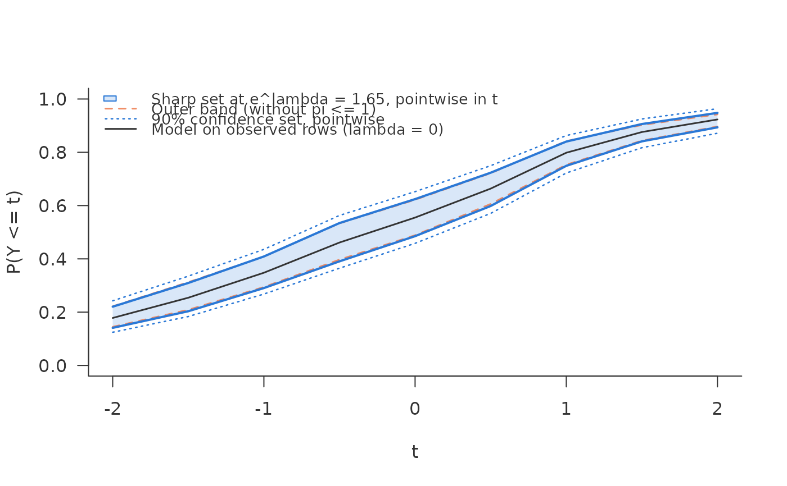

Debiased scan for the distribution function and its quantiles
Source:R/scan_cdf.R
sharp_scan_cdf.Rdsharp_scan_cdf() estimates, at each value t of a grid, the sharp
identified set for the distribution function \(F(t) = P(Y \le t)\) of an
outcome that may be missing not at random, under the assumption of
sharp_scan_mean(): the ratio of the response propensities of any two
outcome values is at most \(e^\lambda\). It adds a debiased estimate and
a confidence set at each t. quantile() inverts the estimated bounds
into bounds for quantiles.
Usage
sharp_scan_cdf(
eta_t,
r,
response,
outcome,
t,
lambda = 1,
target = "all",
weights = NULL,
level = 0.9,
trim = 0,
se_type = c("max", "conditional", "empirical"),
segment = NULL,
clip = 1e-06
)
# S3 method for class 'sharp_scan_cdf'
quantile(x, probs = c(0.25, 0.5, 0.75), ...)
# S3 method for class 'sharp_scan_cdf'
plot(
x,
colors = scan_colors,
text_col = "grey20",
xlab = "t",
ylab = NULL,
main = NULL,
...
)Arguments
- eta_t
An \(n \times T\) matrix: column \(j\) holds the cross-fitted \(\hat\eta_{t_j}(x_i)\) for every row, as from
crossfit_cdf(). Values are clipped into[clip, 1 - clip].- r
Cross-fitted \(\hat r(x_i)\) for every row, in (0, 1].
- response
Response indicator for every row, 0/1 or logical.
- outcome
Numeric outcome; ignored (and may be
NA) whereresponseis 0.- t
Increasing grid of values, one per column of
eta_t.- lambda
A single non-negative \(\lambda\).
- target, segment, weights, level, trim, se_type
As in
sharp_scan_ci().- clip
\(\hat\eta_t\) is kept inside
[clip, 1 - clip].- x
A
"sharp_scan_cdf"object.- probs
Levels \(\alpha\) in (0, 1).
- ...
Ignored.
- colors, text_col
Colours, as for
plot.sharp_scan().- xlab, ylab, main
Axis labels and title.
Value
An object of class "sharp_scan_cdf" with curve, a data frame
with one row per t: t, point (the estimate at \(\lambda = 0\)),
lower, upper, se_lower, se_upper, ci_lower, ci_upper,
naive_lower, naive_upper (the plug-in outer band, without the cap
\(\pi \le 1\)), near_lower, near_upper; and lambda, level,
target, n, n_target.
quantile(): a data frame with prob, point (the quantile of
the estimate at \(\lambda = 0\), interpolated linearly between grid
values), lower (\(Q^-\)) and upper (\(Q^+\)). NA means the
quantile is not bracketed by the grid: at or below its first value, or
above its last.
The set
Fix \(t\) and write \(Z = 1(Y \le t)\) and \(\eta_t(x) = P(Y \le t
\mid R = 1, X = x)\). The identified set for \(F(t \mid x)\) is that of the
binary scan for \(Z\) (Bücker 2026, Corollary S2):
$$[\max\{\mathrm{expit}(\ell_t - \lambda),\, r\eta_t\},\;
\min\{\mathrm{expit}(\ell_t + \lambda),\, r\eta_t + 1 - r\}],
\qquad \ell_t = \mathrm{logit}\,\eta_t,$$
and the set for \(F(t)\) is its mean over rows. Each endpoint is
estimated as in sharp_scan_ci(), whose score for the binary outcome
\(Z\) it uses; target, segment, weights, trim and se_type have
the same meaning, so target = "unobserved" gives the distribution
function of the missing outcomes, \(P(Y \le t \mid R = 0)\).
The sets are sharp for each \(t\) separately, not as a band. In
general no single law compatible with the data attains the upper bound at
every \(t\); the curves are the pointwise envelope. Likewise the
confidence sets hold pointwise in \(t\); bands uniform in \(t\) are not
offered, because the rows where the two pieces of a bound cross move with
\(t\). To cover the set at a few values of \(t\) at once, pass only
those values and level = 1 - (1 - a) / k for \(k\) values and joint
level a (Bonferroni); this is valid and conservative.
Inference and the margin condition
Each endpoint is the mean of a minimum (or maximum) of two pieces that
cross at an angle, so, unlike for the mean, the normal approximation needs
a margin condition: few rows may lie close to where the pieces cross, for
the upper end where \(r(1 + \kappa\eta_t) = 1\), \(\kappa = e^\lambda
- 1\). The output reports, at each t, the weighted share of rows whose
two pieces lie within 0.25 on the logit scale (near_lower,
near_upper); where that share is large the confidence set should be read
with caution. Nuisance estimates must be cross-fitted and converge faster
than \(n^{-1/4}\).
Estimate \(\eta_t(x)\) directly, as a classification of \(Z\) on
\(X\) among the observed rows, one fit per t; crossfit_cdf() does
that for any learner. Reading \(\eta_t\) off a grid of conditional
quantiles is possible but adds the error of the grid.
Quantiles
For a level \(\alpha\), the bounds \(Q^- = \inf\{t : F^+(t) \ge
\alpha\}\) and \(Q^+ = \inf\{t : F^-(t) \ge \alpha\}\) contain the
\(\alpha\)-quantile of every compatible law. They are its sharp set when
\(Y\) given \(R = 1\) has a density that is positive on an open
interval and zero outside it and \(\eta_t(x)\) is continuous in \(t\);
otherwise they are an outer set. quantile(x, probs) computes them from
the estimated curves on the grid t, after sorting each curve into
increasing order (a rearrangement, which leaves a monotone curve unchanged).
On the grid they are widened outwards: \(Q^-\) is reported as the last
grid value at which \(F^+\) is still below \(\alpha\), \(Q^+\) as
the first at which \(F^-\) reaches it, so a coarse grid gives a wider
interval, never a narrower one. They carry no confidence statement.
References
Bücker, M. (2026). Sharp intervals for a mean under bounded selection ratios when the response rate is known. Manuscript.
Chernozhukov, V., Fernández-Val, I. and Galichon, A. (2009). Improving point and interval estimators of monotone functions by rearrangement. Biometrika, 96(3), 559–575. doi:10.1093/biomet/asp030
Examples
d <- simulate_shadow(2000, tilt = -1, outcome = "continuous", seed = 4)
xs <- c("x1", "x2", "z_shadow", "z_policy", "z_score")
fit <- function(lhs) function(train, newdata)
predict(glm(reformulate(xs, lhs), binomial, train), newdata,
type = "response")
tg <- seq(-2, 2, by = 0.5)
cf <- crossfit_cdf(d, "observed", "y", tg, fit_eta = fit("z"),
fit_r = fit("observed"), folds = 3, seed = 1)
k <- sharp_scan_cdf(cf$eta_t, cf$r, d$observed, d$y, t = tg, lambda = 0.5)
k
#> <sharp_scan_cdf> sharp set for the distribution function, debiased, with 90% confidence set
#> rows: 2000 target: all (2000 rows)
#> lambda = 0.5 (propensity ratio 1.65); 9 values of t, sets pointwise in t
#> t MAR lower upper ci_lower ci_upper
#> -2.0 0.178 0.141 0.220 0.125 0.243
#> -1.5 0.254 0.203 0.310 0.184 0.335
#> -0.5 0.461 0.391 0.534 0.365 0.563
#> 0.0 0.555 0.485 0.624 0.458 0.652
#> 0.5 0.664 0.598 0.723 0.571 0.750
#> 1.5 0.876 0.841 0.906 0.817 0.925
#> 2.0 0.923 0.894 0.948 0.871 0.964
#> near the kink: at t = 2, 29% of the rows have both pieces of a bound
#> within 0.25 on the logit scale; the normal approximation needs few
#> such rows (margin condition), so read the confidence set there with
#> caution
quantile(k, c(0.25, 0.5, 0.75))
#> prob point lower upper
#> 1 0.25 -1.5275482 -2.0 -1.0
#> 2 0.50 -0.2935333 -1.0 0.5
#> 3 0.75 0.8203876 0.5 1.5
plot(k)
